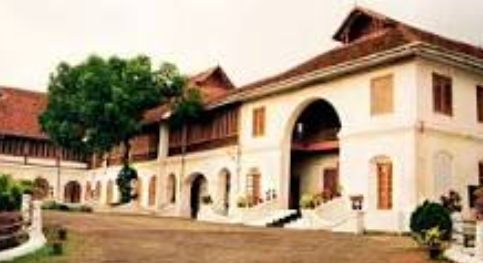

Ernakulam
Ernakulam is a city that is connected to the North-South Corridor National Highway System via the four-laned National Highway 66 as well as National Highway 544.The MC Road starting from Thiruvananthapuram ends in Angamaly. The highway traverses through the entire length and breadth of the city from different points and provides access to the nearby cities such as Thrissur, Palakkad, Salem and Coimbatore. NH 66 was supposed to be acting as the bypass for Kochi city, but the fast-paced urban expansion of Kochi has meant that the bypass quickly became a city road passing through the middle of it, thereby forcing the NHAI to propose a new bypass for the city.
- Hill Palace Museum
- Historical Complex With Museum & Parks
- Bolgatty Palace and Island Resort
- Refined Property With a Poll & golf
